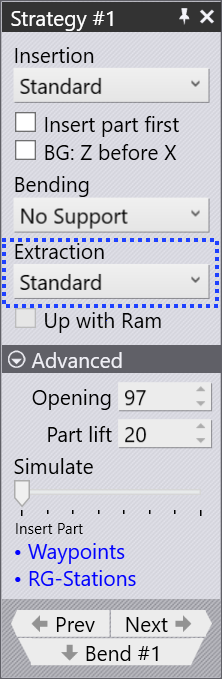
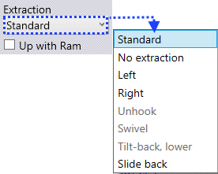
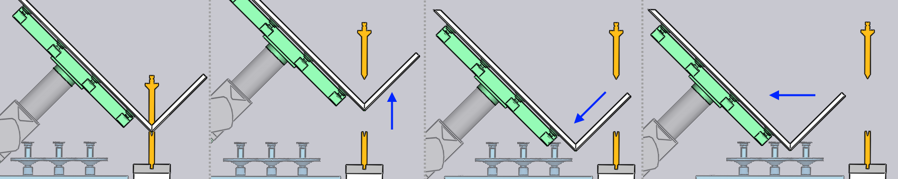

Extraction

After the bending is completed, the part needs to be extracted out from between the punch and the die to prepare it for the next bend. The settings in the Extraction setting let you choose a strategy and then to adjust the different parameters controlling that strategy.
Extraction Strategy

The Extraction list lets you pick from one of the different extraction strategies. Provided below a brief explanation of each of the extraction strategies.
FlexCell CAM will automatically choose one of these strategies to avoid collisions depending on the part geometry. The settings in this section allow you to override the extraction algorithm, or to tweak the parameters for the chosen algorithm.
Standard
The standard extraction method is used by default, when the part needs to be extracted and flipped or rotated in preparation for the next bend.

No Extraction
If the next bend is close to the bend that was just completed, and is approximately parallel to it, and has the same bending direction, there is no need to actually extract the part and insert it again. The part just swivels about the Z axis into position for the next bend, as shown in the sequence below.

Left / Right
A direct backwards extraction is sometimes difficult because the beam may not be able to be opened sufficiently, or when the part has deep flanges interlocking with the gooseneck tool, as shown in the image below.
The part can then be extracted to the left or right by using this strategy. The Side shift parameter controls the sideways shift of the part (in Z direction) before extraction.

Slide back
This is another strategy that can be useful with tall flanges. The part is slid backwards and downwards by the Slide parameter before being extracted out.
